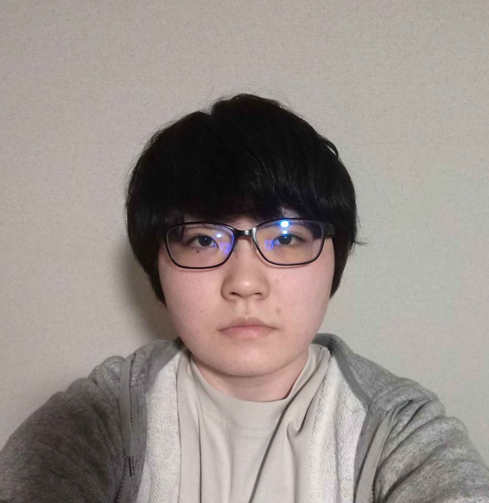

AKIRA MURATA
PORTFOLIO
ABOUT

大阪電気通信大学 情報通信工学部 情報工学科2年生の村田晶です。
大学では電子計算組織研究会。通称EDPSというサークルに所属しており、 主にUnityでのゲーム開発に取り組んでおります。
将来はソフトウェアエンジニアになりたいと考えている為、現在大学内での利用を 想定したwebアプリ開発にチームで取り組んでいます。
WORKS
ウサギと猫の奇妙な冒険
Unity
動画です。再生してご覧ください。
「ウサギと猫の奇妙な冒険」は私が大学のサークルであるEDPSに入部して 初めて制作した横スクロールアクションゲームです。 大学祭では小学生なども来ると聞いていたので子供が気に入るような可愛いデザインで制作しました。 チームで取り組んだ制作で初めての事だらけだったの事が苦労した点です。
Red vs Blue
Unity
動画です。再生してご覧ください。
「Red vs Blue」は大学祭で友人同士で来場される方が多かったため、 友人同士で楽しめるゲームを作ろうと考え制作しました。 操作はシンプルな対戦ゲームですが、攻撃するまでのチャージ機能を搭載したりなど 自信のある出来なので2023年度の大学祭で出展予定です。
flying penguin
Unity
動画です。再生してご覧ください。
「flying penguin」は3つめに制作したゲームです。 個人で制作し数日ほどで完成しました。 一つ目に制作した「ウサギと猫の奇妙な冒険」で身についた技術があったので 初めてのゲーム制作より簡単に作れたと思います。 鳥が好きなのでお気に入りのゲームです。飛べない鳥(ペンギン) が飛んでいる設定も好きです。
おさがりプロジェクト
Node.js
現在制作中のwebアプリのイメージ図です。
「おさがりプロジェクト」と言い、大学内で先輩から 後輩に使い終わった教科書を譲るアプリです
大学の教科書は高価で入学したばかりで先輩に知り合いがいない場合 自分で買うしかないという負担を減らす目的でこのアプリ制作に取り掛かりました。

データベース掲示板
PHP
SELF-PR
学生時代取り組んだこと
大学のサークル活動でUnityを使ったゲーム開発の経験があります。 今まで3つのゲームを開発し,横スクロールアクションを2つと2人で 遊べる対戦ゲームの計3つのゲーム開発を行いました。
横スクロールアクションはチームで開発を行い、初めてのゲーム制作 で何とか自分たちで情報を集めながら開発を行い大学祭で出展しました。 この最初のゲーム開発で初めての事でもチームで協力し分からないことも 自主的に調べて問題を解決する力がついたと思います。
また、大学祭では友人同士で来場される方が多いことに気付き2人で遊べる 対戦ゲームの開発を思いつきました。シンプルな操作のゲームですが、 同じサークルの仲間からはデザインやゲーム自体の面白さを評価され自信の ある出来なので2023年度の大学祭に出展予定です。 このように私は初めての事でも興味のあることには挑戦し、努力を継続できる 人間だと思います。
自覚している性格
私はまじめで計画性のある性格だと自覚しています。 例えば基本的なことですが、大学の講義でも自分に足りないと感じた部分 に関しては積極的に自習するように心がけています。現在では単位を 落としたことはなく、ほとんどの教科でA評価をとれています。 その他にも現在ITパスポート、セキュリティマネジメントといった 情報処理系の資格を保持しているのですが、 試験日までにどれくらいのペースで学習を続ければいいかを考え 計画を立て実際に合格することができました。 またその計画通りに日々こつこつと努力を続けられるというところも 長所だと考えています。
現在取り組んでいること
現在は大学内での利用を想定したwebアプリケーションの開発に取り組んでいます。 このプロジェクトも複数のメンバーでのチーム開発で知識がない状態でスタート したのですが、html, cssで簡単なサイトを作れるようになり、現在はnode.jsで フロントエンドバックエンドの両方を学んでいます。
資格
情報処理系の資格であるITパスポートとセキュリティマネジメント試験の資格 を保持しており、どちらも試験勉強を始めてから1か月ほどで合格した経験が あります。
CONTACT
ご連絡は、
メールにてお願いいたします。